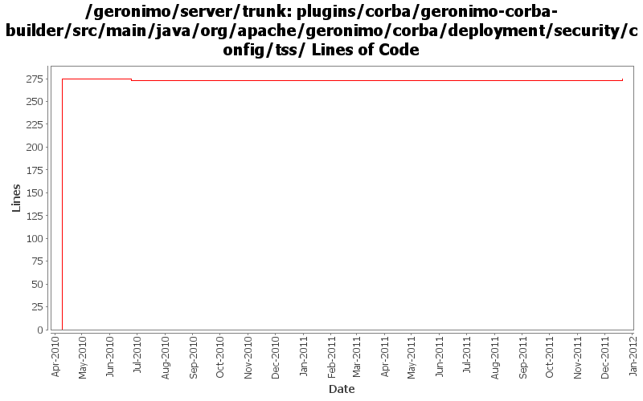

[root]/plugins/corba/geronimo-corba-builder/src/main/java/org/apache/geronimo/corba/deployment/security/config/tss

| Author | Changes | Lines of Code | Lines per Change |
|---|---|---|---|
| djencks | 4 (100.0%) | 295 (100.0%) | 73.7 |
GERONIMO-6240 make xml attribute and reference builders work and provide GBeanBuilder as a gbean for modules builders to use
4 lines of code changed in 1 file:
GERONIMO-5567 rewrite jetty integration to use a openejb-like info tree and the *Registration interfaces. This gets everything started in the right order and is a lot simpler. Old code still needs to be removed
1 lines of code changed in 1 file:
GERONIMO-5190 use openejb-jee jaxb tree for spec dds
15 lines of code changed in 1 file:
GERONIMO-5092 fix split packages, update things a bit for osgi
275 lines of code changed in 1 file: